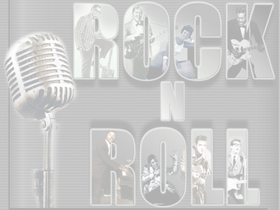

Top Rock Songs
1950's
1960's
1970's
1980's
1990's
2000's
Taken from digital dream door 7/29/2016
1950's
1. Johnny B. Goode - Chuck Berry
2. Jailhouse Rock - Elvis Presley
3. Rock Around The Clock - Bill Haley & His Comets
4. Tutti-Frutti - Little Richard
5. Whole Lot of Shakin' Going On - Jerry Lee Lewis
6. What'd I Say - Ray Charles
7. Summertime Blues - Eddie Cochran
8. Hound Dog - Elvis Presley
9. Long Tall Sally - Little Richard
10. That'll Be The Day - Buddy Holly & the Crickets
11. Maybellene - Chuck Berry
12. Bo Diddley - Bo Diddley
13. Shake, Rattle And Roll - Joe Turner
14. Blue Suede Shoes - Carl Perkins
15. Don't Be Cruel - Elvis Presley
16. Bye Bye Love - Everly Brothers
17. Great Balls Of Fire - Jerry Lee Lewis
18. Earth Angel - Penguins
19. Why Do Fools Fall In Love - Frankie Lymon & the Teenagers
20. Good Golly Miss Molly - Little Richard
21. Be-Bop-A-Lula - Gene Vincent & the Bluecaps
22. School Day - Chuck Berry
23. Rock And Roll Music - Chuck Berry
24. Peggy Sue - Buddy Holly
25. Lawdy Miss Clawdy - Lloyd Price
26. Lucille - Little Richard
27. Roll Over Beethoven - Chuck Berry
28. In The Still Of The Nite - Five Satins
29. I Only Have Eyes For You - Flamingos
30. For Your Precious Love - Jerry Butler & the Impressions
31. Blueberry Hill - Fats Domino
32. Please, Please, Please - James Brown & the Famous Flames
33. Sh-Boom - Chords
34. Money Honey - Drifters featuring Clyde McPhatter
35. I Walk The Line - Johnny Cash and the Tennessee Two
36. Fever - Little Willie John
37. The Great Pretender - Platters
38. Ain't It A Shame - Fats Domino
39. That's All Right - Elvis Presley with Scotty and Bill
40. Your Cheatin' Heart - Hank Williams
41. Sweet Little Sixteen - Chuck Berry
42. The Train Kept-A-Rollin - Johnny Burnette Trio
43. Come Go With Me - Del-Vikings
44. Let The Good Times Roll - Shirley & Lee
45. Heartbreak Hotel - Elvis Presley
46. Rip It Up - Little Richard
47. Rocking Pneumonia & the Boogie Woogie Flu - Huey "Piano" Smith & the Clowns
48. Pledging My Love - Johnny Ace
49. Sixty Minute Man - Dominoes
50. Rocket 88 - Jackie Brenston
[Back to Top]
1960's
1. Respect - Aretha Franklin
2. Louie Louie - Kingsmen
3. I Heard It Through The Grapevine - Marvin Gaye
4. (I Can't Get No) Satisfaction - Rolling Stones
5. Like A Rolling Stone - Bob Dylan
6. Hey Jude - Beatles
7. Good Vibrations - Beach Boys
8. You've Lost That Lovin' Feelin' - Righteous Brothers
9. My Girl - Temptations
10. Light My Fire - Doors
11. She Loves You - Beatles
12. You Really Got Me - Kinks
13. In The Midnight Hour - Wilson Pickett
14. Sunshine Of Your Love - Cream
15. Purple Haze - Jimi Hendrix
16. A Day In The Life - Beatles
17. Papa's Got A Brand New Bag - James Brown
18. Whole Lotta Love - Led Zeppelin
19. My Generation - The Who
20. All Along The Watchtower - Jimi Hendrix
21. Mr. Tambourine Man - Byrds
22. Proud Mary - Creedence Clearwater Revival
23. Dock Of The Bay - Otis Redding
24. When A Man Loves A Woman - Percy Sledge
25. I Want To Hold Your Hand - Beatles
26. A Whiter Shade Of Pale - Procol Harum
27. House Of The Rising Sun - Animals
28. Yesterday - Beatles
29. Be My Baby - Ronettes
30. Where Did Our Love Go - Supremes
31. Somebody To Love - Jefferson Airplane
32. I Saw Her Standing There - Beatles
33. Green Onions - Booker T. & the MGs
34. The Sounds Of Silence - Simon & Garfunkel
35. I Want You Back - Jackson 5
36. Soul Man - Sam & Dave
37. I Get Around - Beach Boys
38. Reach Out, I'll Be There - Four Tops
39. Gimme Some Lovin' - Spencer Davis Group
40. Ain't Too Proud To Beg - Temptations
41. All Day And All Of The Night - Kinks
42. Mony Mony - Tommy James & the Shondells
43. Jumpin' Jack Flash - Rolling Stones
44. Born To Be Wild - Steppenwolf
45. Oh, Pretty Woman - Roy Orbison
46. White Room - Cream
47. Sympathy For The Devil - Rolling Stones
48. Ticket To Ride - Beatles
49. The Tracks Of My Tears - Miracles
50. California Dreamin' - The Mamas & the Papas
[Back to Top]
1970's
1. Stairway to Heaven - Led Zeppelin
2. Imagine - John Lennon
3. Hotel California - The Eagles
4. What's Going On - Marvin Gaye
5. Born to Run - Bruce Springsteen
6. Layla - Derek and the Dominos
7. Superstition - Stevie Wonder
8. Bohemian Rhapsody - Queen
9. Bridge Over Troubled Water - Simon and Garfunkel
10. Let's Stay Together - Al Green
11. Let It Be - The Beatles
12. Maggie May - Rod Stewart
13. American Pie - Don McLean
14. Won't Get Fooled Again - The Who
15. Stayin' Alive - The Bee Gees
16. Free Bird - Lynyrd Skynyrd
17. Brown Sugar - The Rolling Stones
18. Let's Get It On - Marvin Gaye
19. Go Your Own Way - Fleetwood Mac
20. Papa Was A Rollin' Stone - The Temptations
21. Your Song - Elton John
22. Midnight Train To Georgia - Gladys Knight and the Pips
23. More Than A Feeling - Boston
24. Just My Imagination - The Temptations
25. I Will Survive - Gloria Gaynor
26. Roxanne - The Police
27. Dream On - Aerosmith
28. Another Brick in the Wall, Part 2 - Pink Floyd
29. No Woman, No Cry - Bob Marley and the Wailers
30. London Calling - The Clash
31. Family Affair - Sly and the Family Stone
32. Anarchy in the UK - The Sex Pistols
33. Dancing Queen - Abba
34. We Will Rock You/We Are the Champions - Queen
35. Get Up (I Feel Like Being a) Sex Machine - James Brown
36. Living for the City - Stevie Wonder
37. Sweet Home Alabama - Lynyrd Skynyrd
38. Lola - The Kinks
39. Smoke on the Water - Deep Purple
40. Sultans of Swing - Dire Straits
41. Walk This Way - Aerosmith
42. Lean on Me - Bill Withers
43. Who'll Stop the Rain - Creedence Clearwater Revival
44. Kashmir - Led Zeppelin
45. Rapper's Delight - The Sugarhill Gang
46. Heart of Glass - Blondie
47. Theme from 'Shaft' - Isaac Hayes
48. Me and Bobby McGee - Janis Joplin
49. Fire and Rain - James Taylor
50. Baba O'Riley - The Who
[Back to Top]
1980's
1. Billie Jean - Michael Jackson
2. Every Breath You Take - Police
3. When Doves Cry - Prince
4. The Message - Grandmaster Flash & The Furious 5
5. Sexual Healing - Marvin Gaye
6. Like a Virgin - Madonna
7. Walk This Way - Run-D.M.C.
8. Sweet Child O' Mine - Guns N' Roses
9. Don't You Want Me? - Human League
10. Born in the U.S.A. - Bruce Springsteen
11. What's Love Got To Do With It? - Tina Turner
12. Call Me - Blondie
13. Love Will Tear Us Apart - Joy Division
14. Planet Rock - Afrika Bambaataa and The Soul Sonic Force
15. With or Without You - U2
16. Bette Davis Eyes - Kim Carnes
17. Celebration - Kool and The Gang
18. Endless Love - Diana Ross & Lionel Richie
19. Tainted Love - Soft Cell
20. I Love Rock 'n' Roll - Joan Jett & The Blackhearts
21. Little Red Corvette - Prince
22. Sweet Dreams (Are Made of This) - Eurythmics
23. Beat It - Michael Jackson
24. Jump - Van Halen
25. Whip It! - Devo
26. Flashdance...What a Feeling - Irene Cara
27. Girls Just Want To Have Fun - Cyndi Lauper
28. Super Freak Part I - Rick James
29. (You Gotta) Fight For Your Right (To Party!) - Beastie Boys
30. Blue Monday - New Order
31. Fight the Power - Public Enemy
32. Kiss - Prince
33. Upside Down - Diana Ross
34. Fame (I Want To Live Forever) - Irene Cara
35. You Shook Me All Night Long - AC/DC
36. Another One Bites the Dust - Queen
37. We Are the World - U.S.A. for Africa
38. Saving All My Love For You - Whitney Houston
39. Fast Car - Tracy Chapman
40. One - Metallica
41. Fuck Tha Police - N.W.A
42. Purple Rain - Prince
43. Into the Groove - Madonna
44. Papa Don't Preach - Madonna
45. Nasty - Janet Jackson
46. I Feel For You - Chaka Khan
47. I Still Haven't Found What I'm Looking For - U2
48. Sign O' the Times - Prince
49. Start Me Up - Rolling Stones
50. Jessie's Girl - Rick Springfield
[Back to Top]
1990's
1. Smells Like Teen Spirit - Nirvana
2. Losing My Religion - R.E.M.
3. Jeremy - Pearl Jam
4. One - U2
5. Nuthin' But a "G" Thang - Dr. Dre
6. Under The Bridge - Red Hot Chili Peppers
7. Waterfalls - TLC
8. Tears In Heaven - Eric Clapton
9. Doo Wop (That Thing) - Lauryn Hill
10. Loser - Beck
11. Nothing Compares 2 U - Sinéad O'Connor
12. Gangsta's Paradise - Coolio
13. Creep - Radiohead
14. You Oughta Know - Alanis Morissette
15. California Love - 2Pac
16. O.P.P. - Naughty by Nature
17. Wonderwall - Oasis
18. November Rain - Guns N' Roses
19. Black Hole Sun - Soundgarden
20. Mama Said Knock You Out - LL Cool J
21. Enter Sandman - Metallica
22. Smooth - Santana and Rob Thomas
23. Mo Money Mo Problems - Notorious B.I.G.
24. 1979 - Smashing Pumpkins
25. Paranoid Android - Radiohead
26. My Name Is - Eminem
27. All I Wanna Do - Sheryl Crow
28. Bittersweet Symphony - The Verve
29. Come As You Are - Nirvana
30. No Diggity - BLACKstreet
31. Closer - Nine Inch Nails
32. Sabotage - Beastie Boys
33. Alive - Pearl Jam
34. Don't Speak - No Doubt
35. Vogue - Madonna
36. Tennessee - Arrested Development
37. Song 2 - Blur
38. Killing Me Softly - The Fugees
39. Been Caught Stealing - Jane's Addiction
40. Groove Is In The Heart - Deee-Lite
41. What I Got - Sublime
42. Killing In The Name - Rage Against The Machine
43. Regulate - Warren G
44. Longview - Green Day
45. Hard Knock Life - Jay Z
46. Iris - Goo Goo Dolls
47. I Believe I Can Fly - R. Kelly
48. Plush - Stone Temple Pilots
49. Enjoy The Silence - Depeche Mode
50. Crash Into Me - Dave Matthews Band
[Back to Top]
2000's
1. "American Idiot" by Green Day.
2. "Loser" by 3 Doors Down.
3. "Otherside" by Red Hot Chili Peppers.
4. "All The Small Things" by Blink-182.
5. "Hanging By A Moment" by Lifehouse.
6. "Yellow" by Coldplay.
7. "Show Me How To Live" by Audioslave.
8. "Beautiful Day" by U2.
9. "No One Knows" by Queens Of The Stone Age.
10. "Fat Lip" by Sum 41.
11. "The Middle" by Jimmy Eat World.
12. "Smooth Criminal" by Alien Ant Farm.
13. "Viscarious" by Tool.
14. "Kryptonite" by 3 Doors Down.
15. "Don't Let Me Get Me" by P!nk.
16. "Sk8r Boi" by Avril Lavigne.
17. "Minority" by Green Day.
18. "I Hate Everything About You" by Three Days Grace.
19. "Here To Stay" by Koяn.
20. "Stupify" by Disturbed.
21. "Wait And Bleed" by Slipknot.
22. "Wasting My Time" by Default.
23. "How You Remind Me" by Nickleback.
24. "When I Grow Up" by Garbage.
25. "Somebody Told Me" by The Killers.
26. "In The End" by Linkin Park.
27. "Killing Loneliness" by HIM.
28. "Knights Of Cydonia" by Muse.
29. "Complicated" by Avril Lavigne.
30. "Adam's Song" by Blink-182.
31. "Be Yourself" by Audioslave.
32. "Californication" by Red Hot Chili Peppers.
33. "Big Yellow Taxi" by Counting Crows.
34. "In Too Deep" by Sum 41.
35. "I Just Wanna Live" by Good Charlotte.
36. "Lateralus" by Tool.
37. "Best Of You" by Foo Fighters.
38. "Toxicity" by System Of A Down.
39. "Wherever You Will Go" by The Calling.
40. "Bad Touch" by Bloodhound Gang.
41. "Want You Bad" by The Offspring.
42. "Last Resort" by Papa Roach.
43. "No Such Thing" by John Mayer.
44. "Superman (It's Not Easy)" by Five For Fighting.
45. "Rollin' (Air Raid Vehicle)" by Limp Bizkit.
46. "Numb" by Linkin Park.
47. "Soul Meets Body" by Death Cab For Cutie.
48. "Perfect" by Simple Plan.
49. "Time Is Running Out" by Muse.
50. "The Scientist" by Coldplay.